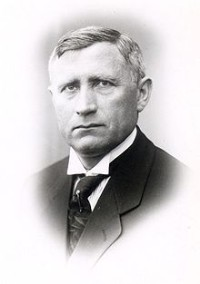

Ivar Larsen Kirkeby-Garstad
M, #46132, f. 5 august 1877, d. 18 juni 1951
Foreldre

Ivar_Kirkeby-Garstad
Biografi
Ivar Larsen Kirkeby-Garstad ble født den 5 august 1877 på/i Garstad bnr. 37, Garstad, Vikna, Nord-Trøndelag. Han giftet seg med
Agnes Emilie Johanne Horseng den 30 desember 1905 på/i Garstad kirke, Vikna, Nord-Trøndelag. Han døde den 18 juni 1951 på/i Namdal sykehus, Namsos, Nord-Trøndelag. Han ble gravlagt den 25 juni 1951 på/i Garstad kirkegård, Vikna, Nord-Trøndelag.
Ivar Larsen Kirkeby-Garstad ble døpt den 28 oktober 1877 på/i Garstad kirke, Vikna, Nord-Trøndelag. Han ble konfirmert den 16 juli 1893 på/i Garstad kirke, Vikna, Nord-Trøndelag. Han brukte i 1901 Garstad 37/1 og 2, Garstad, Vikna, Nord-Trøndelag. Han kjøpte i 1922 Garstad 37/2, Garstad, Vikna, Nord-Trøndelag, for 4.000 kroner.
Ivar Larsen Kirkeby-Garstad var en norsk gårdbruker og politiker (B). Gårdbruker på Garstad i Vikna fra 1900, lensmann i Nærøy og Vikna 1933–1948. Han var innvalgt på Stortinget fra Nord-Trøndelag 1922–1945, og var 1. vararepresentant 1945–1949 (og møtte periodevis). Kirkeby-Garstad var konstituert landbruksminister i Peder Kolstads regjering i 1932, samt handelsminister i Jens Hundseids regjering 1932–1933.
Han var far til Lars Kirkeby-Garstad og oldefar til Lars Peder Brekk.
Ivar ble arrestert av Gestapo 7.9.1944 og satt på Vollan i Trondheim frem til 7.10 og deretter på Falstad frem til frigjøringen.
| Sist redigert |
13 mai 2023 18:45:09 |
Agnes Emilie Johanne Horseng
K, #46133, f. 13 april 1882, d. 5 mars 1954
Foreldre
Biografi
Agnes Emilie Johanne Horseng ble født den 13 april 1882 på/i Vikna, Nord-Trøndelag. Hun giftet seg med
Ivar Larsen Kirkeby-Garstad den 30 desember 1905 på/i Garstad kirke, Vikna, Nord-Trøndelag. Hun døde den 5 mars 1954 på/i Vikna, Nord-Trøndelag. Hun ble gravlagt den 13 mars 1954 på/i Garstad kirkegård, Vikna, Nord-Trøndelag.
Agnes Emilie Johanne Horseng was also known as Agnes Emilie Johanne Kirkeby-Garstad. Hun ble døpt den 29 mai 1882 på/i Garstad kirke, Vikna, Nord-Trøndelag. Hun ble konfirmert den 25 juli 1897 på/i Garstad kirke, Vikna, Nord-Trøndelag.
| Sist redigert |
9 januar 2022 00:00:00 |
| Slektskap | 6-menning 3 ganger forskjøvet til Håkon Wahl |
Lars Thomassen Fundaunet
M, #46134, f. 20 februar 1835, d. 3 desember 1901
Biografi
Lars Thomassen Fundaunet ble født den 20 februar 1835 på/i Meråker, Nord-Trøndelag. Han giftet seg med
Ragnhild Pedersdatter Kirkeby den 20 april 1866 på/i Meråker kirke, Meråker, Nord-Trøndelag. Han døde den 3 desember 1901 på/i Garstad bnr. 37, Garstad, Vikna, Nord-Trøndelag. Han ble gravlagt den 16 desember 1901 på/i Garstad kirkegård, Vikna, Nord-Trøndelag.
Lars Thomassen Fundaunet ble døpt den 8 mars 1835 på/i Stjørdal, Nord-Trøndelag. Han brukte omtrent 1886 Garstad bnr. 37, Garstad, Vikna, Nord-Trøndelag.
| Sist redigert |
9 januar 2022 00:00:00 |
Ragnhild Pedersdatter Kirkeby
K, #46135, f. 8 august 1840, d. 15 november 1914
Biografi
Ragnhild Pedersdatter Kirkeby ble født den 8 august 1840 på/i Kirkeby, Meråker, Nord-Trøndelag. Hun giftet seg med
Lars Thomassen Fundaunet den 20 april 1866 på/i Meråker kirke, Meråker, Nord-Trøndelag. Hun døde den 15 november 1914 på/i Garstad bnr. 37, Garstad, Vikna, Nord-Trøndelag. Hun ble gravlagt den 25 november 2014 på/i Garstad kirkegård, Vikna, Nord-Trøndelag.
Ragnhild Pedersdatter Kirkeby ble døpt den 11 oktober 1840 på/i Stjørdal, Nord-Trøndelag.
| Sist redigert |
9 januar 2022 00:00:00 |
{kind=link}